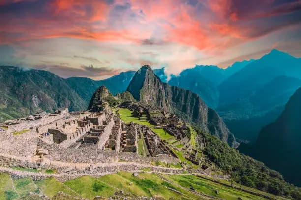

Cusco is a city full of history and culture. It was tha capital of the Inca Empire long ago and still has many old buildings. Today, many travelers start their trip here to visit Machu Picchu. ✨
Cusco is one of the most popular pourist destinations in Peru. Its old streets, Andean culture, and mountain views make it a special place. Every year, peoplefrom many countries come to visit it. 🌎🏔️
